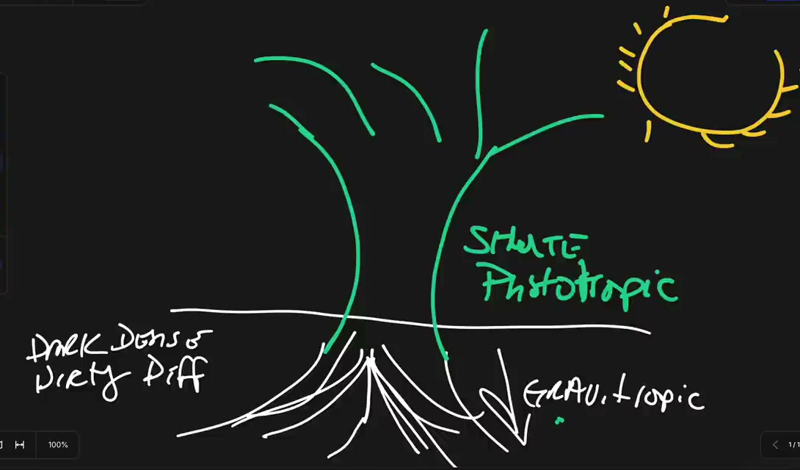
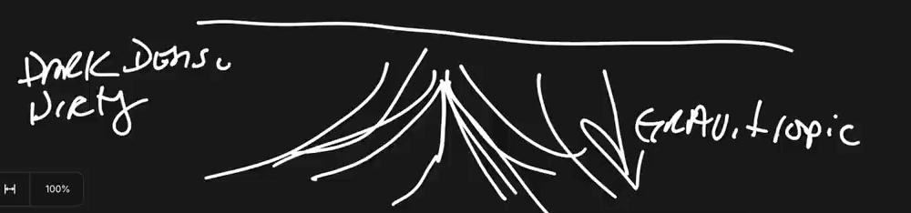
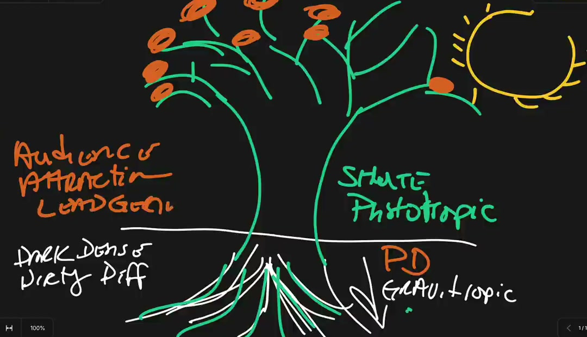

01
Past
Past perceived voids create present pursued values.
What did they never have, lose, or feel was withheld? The lack they remember becomes the desire they pursue now.
Offer move: name the absence in their words.
Notes from Myron Golden
A reminder for making offers the market already wants — before you build, price, or pitch them.
From “Just Grow a Money Tree” · 53 min · watch the source ↗
The one reframe
“You don’t want to give the marketplace something of value. You want to give them something they value.”
An offer is not a pitch. It is the fruit of a system rooted in a problem the market already feels. Money grows on money trees — systems that keep producing the same fruit.
The taproot
Most people discover something they value, then spend all their energy trying to make the marketplace care. The taproot of an offer is the market’s desired outcome — observed in detail, then served by a mechanism.
“Something of value” is not enough. It has to be something they value.
A gardening guide can be genuinely valuable and still be worthless to someone who never intends to garden. Value is not intrinsic. It is a match between what you make and what they already want.
“Something can be of value and they don’t value it.”
The test: would they pay for it before you build it?

The value triad
People pursue what they value. Values are not random: they form around what was missing, what seems good now, and what they imagine is possible.
Past
What did they never have, lose, or feel was withheld? The lack they remember becomes the desire they pursue now.
Offer move: name the absence in their words.
Present
What do they already believe is good? People will pay for what fits inside their current spending comfort zone — and resist what asks them to become someone else first.
Offer move: meet the belief they already hold.
Future
What future are they trying to reach? When the outcome is clear enough, the right vehicle becomes an obvious purchase.
Offer move: show the destination, then the vehicle.
The root system
The tree is gravitropic: it grows toward gravity before it grows toward light. Down is dark, dirty, dense, and difficult — which is exactly why most offers skip it.

“Obsess over other people’s problems long enough to find an elegant solution.”
The fruit
Fruit is a living thing whose seed is in itself. A delivered offer should create the next opportunity — proof, referral, repeat, product — not exhaust the tree.
Consumption never creates lack. Consumption creates the opportunity for production.
When an apple is eaten, the seeds are exposed. Plant one and you do not get an apple; you get an entire new tree. Design the offer so that delivering it leaves behind the raw material for the next one.
A great offer is an asset that keeps producing after the transaction ends.
“The purpose of the production of the tree is not for itself.”
The pithy bits
The best offer advice in the talk arrives as one-liners. Keep these where you can see them while you build.
“Voids in the past, virtues in the present create values that are pursuable by the people you desire to sell to.”
“Money does grow on trees. But money only grows on money trees.”
“Most people would rather have effortless profitability than effortful unprofitability.”
“If you plant a tree in a pot, the tree can only grow as big as the pot can hold the roots.”
“Nobody cares about your story.”
“The only way to solve your problems is by solving somebody else’s.”
“If you resist down, up resists you.”
“Down is dark. Down is dirty. Down is dense. Down is difficult.”
“The stuff that nobody can see you doing is the stuff that makes people desire to see you do anything.”
“The fruit will always match the root.”
“I’ve never seen an apple tree eat an apple.”
“Consumption never creates lack. Consumption creates the opportunity for production.”
“The best time to plant a tree, especially a money tree, is 20 years ago. Second best time: today.”
Position & proof
The offer has to be legible before it can be desirable. Name the outcome the market already wants, show the mechanism, then let other people’s results do the convincing.

“How to Grow a Business Really Successfully” speaks to people who already care about business. “Just Grow a Money Tree” speaks to a universal desire. The frame decides the size of the audience.
Rich people have problems too, and when somebody clearly articulates their ability to solve a problem for us, we will happily pay them — with zero resistance.
The limitation is rarely the market’s appetite; it is whether you have built something they want.
Connection content earns attention. Conversion content shows the elegant solution. Consensus content — past clients, case studies, borrowed audiences — makes belief safe.
The three questions that stop people
Pre-flight
Seven questions to run against the offer before it goes out into the market.
Find what the market already wants, obsess until you can over-deliver it as a repeatable mechanism, prove it in public, and price it like the transformation is real.